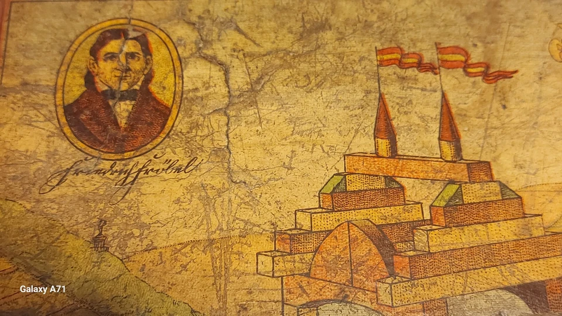

Educational toys that shaped modern design thinking
Froebel blocks, also known as Froebel's Gifts (Fröbelgaben), were created by Friedrich Froebel (1782-1852), the German educator who invented kindergarten. These educational toys were first introduced as part of Froebel's kindergarten curriculum in Germany during the 1830s.
The blocks gained international recognition when they were showcased at the Philadelphia Centennial Exposition in 1876. It was there that Anna Lloyd Wright, Frank Lloyd Wright's mother, discovered them and purchased a set for her nine-year-old son Frank. This moment would prove to be one of the most formative influences on one of America's greatest architects.
Froebel's Gifts consist of a series of educational materials numbered from 1 through 10, each building upon the previous one in complexity. The materials include:
One of the most influential sets in the series is Froebel's Fifth Gift, which contains 21 one-inch wooden cubes, some of which are divided into halves or quarters. This set allows for the creation of more complex architectural forms and teaches concepts of fractions, symmetry, and balance. Children use these blocks to create patterns that express ideas, make observations, or tell stories.
Frank Lloyd Wright credited Froebel blocks as a formative influence on his architectural thinking. In his autobiography, Wright stated that the blocks "gave me a sense of structure you couldn't get from anything else." The geometric abstraction and modular approach of Froebel's system directly influenced Wright's architectural style.
Wright's use of geometric patterns, abstracted nature forms, and unity in design can be traced to his early experiences with Froebel blocks. The concept of "learning by doing" that Wright later implemented in his Taliesin Fellowship was inspired by Froebel's educational philosophy.
The impact of Froebel's educational methods extended far beyond Frank Lloyd Wright. Many modernist architects and designers were influenced by these principles:
Froebel's educational approach emphasized:
The principles of Froebel's educational toys continue to influence modern design education. They connect to contemporary methodologies like LEGO® Serious Play® and are still used in Montessori and other progressive educational approaches. There's a growing revival of interest in hands-on, tactile learning experiences in our digital age.
The Froebel blocks in this collection represent an important link between educational philosophy and architectural design, showing how early childhood experiences with these materials shaped one of the most influential architects of the 20th century.